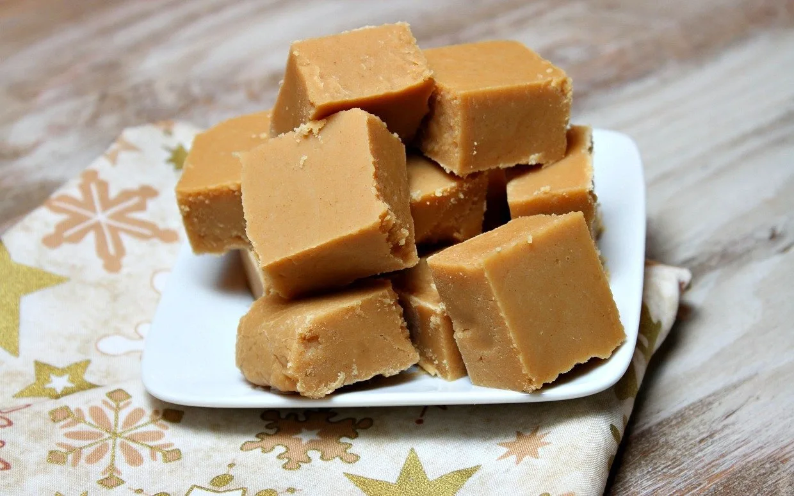

Peanut Butter Fudge

Description
Although fudge is popular during the holiday season, its actually a sweet treat you can enjor
throughout the year-even during the summer months.
This peanut butter fudge recipe only requires four ingredients and takes 10 minutes to prepare. Setting fudge can be difficult, but using these steps you'll learn how to make this tasty
treat in no time.
Ingredients
- Granulated white sugar
- Milk
- Peanut butter (can be either smooth or chunky)
- Vanilla extract
Directions
- Grease an 8x8 inch baking pan
- In a medium saucepan, bring sugar and milk to a boil. Allow to boil for about 2 1/2 minutes,
stirring regularly and then remove from heat. Add the peanut butter and vanilla and stir until smooth.
- Pour the mixture into the pan and allow to cool until set. Slice into 1-inch squares. Enjoy!
Return to homepage